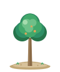
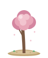
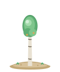
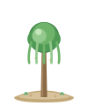
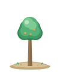

Ilustração viva

Seis espécies pra colecionar.
Carvalho, pinheiro, bétula, salgueiro, cerejeira e arbusto — cada uma com profundidade, luz e um acento próprio. As mesmas que crescem no app.

Carvalho
Constante, robusto
Pinheiro
Alto, resiliente

Cerejeira
Sazonal, rara

Bétula
Leve, luminosa

Salgueiro
Calmo, fluido

Arbusto
Rápido, gentil


Foco é melhor em bando.
O Grovely não é só um timer solitário. Você foca com gente de verdade — e todo mundo planta no mesmo bosque.
Círculos de 6–12
Convide amigos, colegas ou a turma de estudo. Todos plantam no bosque compartilhado da semana, rumo a uma meta comum.
Presença ao vivo
Veja quem do círculo está focando agora — e entre junto. Nada motiva mais do que gente plantando do seu lado.
Liga semanal
Pódio novo toda segunda, countdown até o fim da semana e o quanto falta pra você passar o próximo. Rivalidade saudável.
O bosque de vocês,
semana a semana.
Cada árvore plantada pelo círculo enche o bosque compartilhado. Bata a meta, suba na liga e leve seu grupo pro topo — só o primeiro nome e a contagem de árvores são visíveis. Sem feed, sem pressão tóxica.